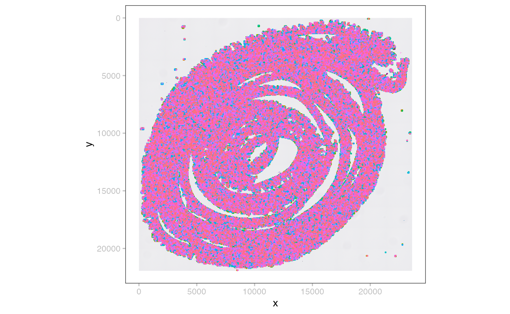

`SpatialData`
Helena Lucia Crowell
Louise Deconinck
Artür Manukyan
Dario Righelli
Estella Dong
Vince Carey
November 17, 2024
Source:vignettes/SpatialData.Rmd
SpatialData.RmdIntroduction
The SpatialData package contains a set of reader and plotting functions for spatial omics data stored as SpatialData .zarr files, following OME-NGFF specs.
Each SpatialData object is composed of five layers: images, labels, shapes, points, and tables. Each layer may contain an arbitrary number of elements.
Images and labels are represented as ZarrArrays (Rarr). Points and shapes are represented as arrow objects linked to an on-disk .parquet file. As such, all data are represented out of memory.
Element annotation as well as cross-layer summarizations (e.g., count matrices) are represented as SingleCellExperiment as tables.
Handling
For demonstration, we read in a toy dataset that is available through the package:
x <- file.path("extdata", "blobs.zarr")
x <- system.file(x, package="SpatialData")
(x <- readSpatialData(x))## class: SpatialData
## - images(2):
## - blobs_image (3,64,64)
## - blobs_multiscale_image (3,64,64)
## - labels(2):
## - blobs_labels (64,64)
## - blobs_multiscale_labels (64,64)
## - points(1):
## - blobs_points (200)
## - shapes(3):
## - blobs_circles (5,circle)
## - blobs_multipolygons (2,polygon)
## - blobs_polygons (5,polygon)
## - tables(1):
## - table (3,10)
## coordinate systems:
## - global(8): blobs_image blobs_multiscale_image ... blobs_polygons
## blobs_points
## - scale(1): blobs_labels
## - translation(1): blobs_labels
## - affine(1): blobs_labels
## - sequence(1): blobs_labelsSpatialData object behave like a list, thereby supporting flexible accession, e.g., via $ and [[, using character or integer indices etc. Specifically,
-
image/label/shape/point/table()retrieve one element -
images/labels/shapes/points/tables()retrieve one layer -
image/label/shape/point/tableNames()retrieve element names
Let’s demonstrate these capabilities using the image layer:
shapeNames(x) # there are two images
shapes(x) # this is a list of them
shape(x, i=1) # this is the 1st one
shape(x, "blobs_polygons") # this is the 3nd one
x$shapes$blobs_circles # list-like handling also worksEach element is made up of two key components:
-
data: the actual array or table (for images/labels and shapes/points, respectively) -
meta: list of metadata retrieved from an OME-NGFF compliant .zattrs (stored asZattrs)
## FileSystemDataset with 1 Parquet file
## 2 columns
## geometry: geoarrow.wkb <crs: unspecified>
## radius: int64
##
## See $metadata for additional Schema metadata
meta(shape(x)) ## An object of class "Zattrs"
## [[1]]
## [1] "x" "y"
##
## [[2]]
## input.axes input.name output.axes output.name type
## 1 c("x", ".... xy c("x", ".... global identity
##
## [[3]]
## [1] "ngff:shapes"
##
## [[4]]
## [[4]]$version
## [1] "0.2"Multiscales
image(x, "blobs_multiscale_image")## class: ImageArray (MultiScale)
## Scales (3): (3,64,64) (3,32,32) (3,16,16)Coordinates
Zattrs specify an explicit relationship between elements and coordinate systems. We can represent these are a graph as follows:
(g <- SpatialData:::.coord2graph(x))## A graphAM graph with directed edges
## Number of Nodes = 14
## Number of Edges = 13
graph::plot(g)The above representation greatly facilitates queries of the transformation(s) required to spatially align elements. blobs_labels, for example, requires a sequential transformation (scaling and translation) for the sequence space:
SpatialData:::.get_path(g, "blobs_labels", "sequence")## [[1]]
## [[1]]$data
## [1] 3 2
##
## [[1]]$type
## [1] "scale"
##
##
## [[2]]
## [[2]]$data
## [1] -50 10
##
## [[2]]$type
## [1] "translation"Visualization
# layered
plotSpatialData() +
plotImage(x) +
plotLabel(x) +
plotShape(x, 1) +
plotShape(x, 3) +
new_scale_color() +
plotPoint(x, c="genes")
# multiscales
wrap_plots(nrow=1, lapply(seq(3), \(.)
plotSpatialData() + plotImage(x, i=2, k=.)))Technologies
MERFISH
td <- tempfile()
dir.create(td) # problem in action related to file reference (URL?) scheme
pa <- unzip_merfish_demo(dest=td)
x <- readSpatialData(pa)In this example data, we do not have a label for the shape polygons. Such labels could be morphological regions annotated by pathologists.
i <- sample(length(p <- point(x, i=1)), 2e3)
point(x, "2k") <- p[i]
plotSpatialData() +
plotImage(x) +
plotPoint(x, i="2k", c="cell_type", s=0.2) +
new_scale_color() +
plotShape(x, i="anatomical") +
scale_color_manual(values=hcl.colors(6, "Spectral")) 
We could also show plot the transcript without cell segmentation. There are only 2,000 cells, but 3,714,642 molecules, so it takes a long time to compile.
Lets crop the image and visualize and put it next to the original image:
bb <- list(xmin=1500, xmax=2300, ymin=4800, ymax=5500)
bb <- list(xmin=1500, xmax=2300, ymin=5500, ymax=6500)
crop <- do.call(query, c(list(x=image(x)), bb))
y <- SpatialData(images=list("foo"=crop))
p <- plotSpatialData() + plotImage(x)
q <- plotSpatialData() + plotImage(y)
p | qMibiTOF
Colorectal carcinoma, 25 MB; no shapes, no points.
dir.create(td <- tempfile())
pa <- unzip_spd_demo(zipname="mibitof.zip", dest=td, source="biocOSN")
(x <- readSpatialData(pa))## class: SpatialData
## - images(3):
## - point16_image (3,1024,1024)
## - point23_image (3,1024,1024)
## - point8_image (3,1024,1024)
## - labels(3):
## - point16_labels (1024,1024)
## - point23_labels (1024,1024)
## - point8_labels (1024,1024)
## - points(0):
## - shapes(0):
## - tables(1):
## - table (36,3309)
## coordinate systems:
## - point16(2): point16_image point16_labels
## - point23(2): point23_image point23_labels
## - point8(2): point8_image point8_labels
wrap_plots(nrow=1, lapply(seq(3), \(.)
plotSpatialData() + plotImage(x, .) + plotLabel(x, .)))VisiumHD
Mouse intestine, 1GB; 4 image resolutions and 3 shapes at 2, 8, and 16 m.
dir.create(td <- tempfile())
nm <- "visium_hd_3.0.0_io.zip"
pa <- unzip_spd_demo(zipname=nm, dest=td, source="biocOSN")
(x <- readSpatialData(pa, tables=NULL))## class: SpatialData
## - images(4):
## - Visium_HD_Mouse_Small_Intestine_cytassist_image (3,3000,3200)
## - Visium_HD_Mouse_Small_Intestine_full_image (3,21943,23618)
## - Visium_HD_Mouse_Small_Intestine_hires_image (3,5575,6000)
## - Visium_HD_Mouse_Small_Intestine_lowres_image (3,558,600)
## - labels(0):
## - points(0):
## - shapes(3):
## - Visium_HD_Mouse_Small_Intestine_square_002um (5479660,circle)
## - Visium_HD_Mouse_Small_Intestine_square_008um (351817,circle)
## - Visium_HD_Mouse_Small_Intestine_square_016um (91033,circle)
## - tables(0):
## coordinate systems:
## - global(5): Visium_HD_Mouse_Small_Intestine_cytassist_image
## Visium_HD_Mouse_Small_Intestine_full_image
## Visium_HD_Mouse_Small_Intestine_square_002um
## Visium_HD_Mouse_Small_Intestine_square_008um
## Visium_HD_Mouse_Small_Intestine_square_016um
## - downscaled_hires(4): Visium_HD_Mouse_Small_Intestine_hires_image
## Visium_HD_Mouse_Small_Intestine_square_002um
## Visium_HD_Mouse_Small_Intestine_square_008um
## Visium_HD_Mouse_Small_Intestine_square_016um
## - downscaled_lowres(4): Visium_HD_Mouse_Small_Intestine_lowres_image
## Visium_HD_Mouse_Small_Intestine_square_002um
## Visium_HD_Mouse_Small_Intestine_square_008um
## Visium_HD_Mouse_Small_Intestine_square_016um
plotSpatialData() +
plotImage(x, i=2) +
plotShape(x, i=3, s=0.1)
CyCIF (MCMICRO output)
Small lung adenocarcinoma, 250 MB; 1 image, 2 labels, 2 tables.
dir.create(td <- tempfile())
nm <- "mcmicro_io.zip"
pa <- unzip_spd_demo(zipname=nm, dest=td, source="biocOSN")
(x <- readSpatialData(pa))## class: SpatialData
## - images(1):
## - exemplar-001_image (12,3139,2511)
## - labels(2):
## - exemplar-001_cell (3139,2511)
## - exemplar-001_nuclei (3139,2511)
## - points(0):
## - shapes(0):
## - tables(2):
## - exemplar-001--ilastik_cell (12,11607)
## - exemplar-001--unmicst_cell (12,11170)
## coordinate systems:
## - global(3): exemplar-001_image exemplar-001_cell exemplar-001_nucleiIMC (Steinbock)
4 different cancers (SCCHN, BCC, NSCLC, CRC), 820 MB; 14 images, 14 labels, 1 table.
dir.create(td <- tempfile())
nm <- "steinbock_io.zip"
pa <- unzip_spd_demo(zipname=nm, dest=td, source="biocOSN")
(x <- readSpatialData(pa))## class: SpatialData
## - images(14):
## - Patient1_001_image (40,600,600)
## - Patient1_002_image (40,600,600)
## - Patient1_003_image (40,600,600)
## - Patient2_001_image (40,600,600)
## - Patient2_002_image (40,600,600)
## - Patient2_003_image (40,600,600)
## - Patient2_004_image (40,600,600)
## - Patient3_001_image (40,600,600)
## - Patient3_002_image (40,600,600)
## - Patient3_003_image (40,600,600)
## - Patient4_005_image (40,600,600)
## - Patient4_006_image (40,600,600)
## - Patient4_007_image (40,600,600)
## - Patient4_008_image (40,600,600)
## - labels(14):
## - Patient1_001_labels (600,600)
## - Patient1_002_labels (600,600)
## - Patient1_003_labels (600,600)
## - Patient2_001_labels (600,600)
## - Patient2_002_labels (600,600)
## - Patient2_003_labels (600,600)
## - Patient2_004_labels (600,600)
## - Patient3_001_labels (600,600)
## - Patient3_002_labels (600,600)
## - Patient3_003_labels (600,600)
## - Patient4_005_labels (600,600)
## - Patient4_006_labels (600,600)
## - Patient4_007_labels (600,600)
## - Patient4_008_labels (600,600)
## - points(0):
## - shapes(0):
## - tables(1):
## - table (40,47859)
## coordinate systems:
## - Patient1_001(2): Patient1_001_image Patient1_001_labels
## - Patient1_002(2): Patient1_002_image Patient1_002_labels
## - Patient1_003(2): Patient1_003_image Patient1_003_labels
## - Patient2_001(2): Patient2_001_image Patient2_001_labels
## - Patient2_002(2): Patient2_002_image Patient2_002_labels
## - Patient2_003(2): Patient2_003_image Patient2_003_labels
## - Patient2_004(2): Patient2_004_image Patient2_004_labels
## - Patient3_001(2): Patient3_001_image Patient3_001_labels
## - Patient3_002(2): Patient3_002_image Patient3_002_labels
## - Patient3_003(2): Patient3_003_image Patient3_003_labels
## - Patient4_005(2): Patient4_005_image Patient4_005_labels
## - Patient4_006(2): Patient4_006_image Patient4_006_labels
## - Patient4_007(2): Patient4_007_image Patient4_007_labels
## - Patient4_008(2): Patient4_008_image Patient4_008_labelsSession info
## R version 4.4.1 (2024-06-14)
## Platform: aarch64-apple-darwin20
## Running under: macOS Sonoma 14.7
##
## Matrix products: default
## BLAS: /Library/Frameworks/R.framework/Versions/4.4-arm64/Resources/lib/libRblas.0.dylib
## LAPACK: /Library/Frameworks/R.framework/Versions/4.4-arm64/Resources/lib/libRlapack.dylib; LAPACK version 3.12.0
##
## locale:
## [1] en_US.UTF-8/en_US.UTF-8/en_US.UTF-8/C/en_US.UTF-8/en_US.UTF-8
##
## time zone: America/New_York
## tzcode source: internal
##
## attached base packages:
## [1] grid stats4 stats graphics grDevices utils datasets
## [8] methods base
##
## other attached packages:
## [1] Rgraphviz_2.50.0 graph_1.84.0 Rarr_1.6.0
## [4] DelayedArray_0.32.0 SparseArray_1.6.0 S4Arrays_1.6.0
## [7] abind_1.4-8 IRanges_2.40.0 S4Vectors_0.44.0
## [10] MatrixGenerics_1.18.0 matrixStats_1.4.1 BiocGenerics_0.52.0
## [13] Matrix_1.7-1 SpatialData_0.99.14 ggnewscale_0.5.0
## [16] patchwork_1.3.0 ggplot2_3.5.1 BiocStyle_2.34.0
##
## loaded via a namespace (and not attached):
## [1] DBI_1.2.3 RBGL_1.82.0
## [3] anndataR_0.99.0 rlang_1.1.4
## [5] magrittr_2.0.3 e1071_1.7-16
## [7] compiler_4.4.1 RSQLite_2.3.7
## [9] dir.expiry_1.14.0 paws.storage_0.7.0
## [11] png_0.1-8 systemfonts_1.1.0
## [13] vctrs_0.6.5 stringr_1.5.1
## [15] wk_0.9.4 pkgconfig_2.0.3
## [17] crayon_1.5.3 fastmap_1.2.0
## [19] dbplyr_2.5.0 XVector_0.46.0
## [21] labeling_0.4.3 paws.common_0.7.7
## [23] utf8_1.2.4 rmarkdown_2.29
## [25] UCSC.utils_1.2.0 ragg_1.3.3
## [27] purrr_1.0.2 bit_4.5.0
## [29] xfun_0.49 zlibbioc_1.52.0
## [31] cachem_1.1.0 GenomeInfoDb_1.42.0
## [33] jsonlite_1.8.9 blob_1.2.4
## [35] tweenr_2.0.3 parallel_4.4.1
## [37] R6_2.5.1 bslib_0.8.0
## [39] stringi_1.8.4 reticulate_1.40.0
## [41] GenomicRanges_1.58.0 jquerylib_0.1.4
## [43] Rcpp_1.0.13-1 bookdown_0.41
## [45] assertthat_0.2.1 SummarizedExperiment_1.36.0
## [47] knitr_1.49 R.utils_2.12.3
## [49] tidyselect_1.2.1 yaml_2.3.10
## [51] zellkonverter_1.16.0 curl_6.0.1
## [53] lattice_0.22-6 tibble_3.2.1
## [55] Biobase_2.66.0 basilisk.utils_1.18.0
## [57] withr_3.0.2 evaluate_1.0.1
## [59] sf_1.0-19 desc_1.4.3
## [61] units_0.8-5 proxy_0.4-27
## [63] polyclip_1.10-7 BiocFileCache_2.14.0
## [65] pillar_1.9.0 BiocManager_1.30.25
## [67] filelock_1.0.3 KernSmooth_2.23-24
## [69] pizzarr_0.1.0 generics_0.1.3
## [71] nanoarrow_0.6.0 munsell_0.5.1
## [73] scales_1.3.0 class_7.3-22
## [75] glue_1.8.0 tools_4.4.1
## [77] fs_1.6.5 colorspace_2.1-1
## [79] SingleCellExperiment_1.28.1 GenomeInfoDbData_1.2.13
## [81] basilisk_1.18.0 ggforce_0.4.2
## [83] cli_3.6.3 textshaping_0.4.0
## [85] fansi_1.0.6 arrow_17.0.0.1
## [87] dplyr_1.1.4 geoarrow_0.2.1
## [89] gtable_0.3.6 R.methodsS3_1.8.2
## [91] sass_0.4.9 digest_0.6.37
## [93] classInt_0.4-10 htmlwidgets_1.6.4
## [95] farver_2.1.2 memoise_2.0.1
## [97] htmltools_0.5.8.1 pkgdown_2.1.1
## [99] R.oo_1.27.0 lifecycle_1.0.4
## [101] httr_1.4.7 bit64_4.5.2
## [103] MASS_7.3-61